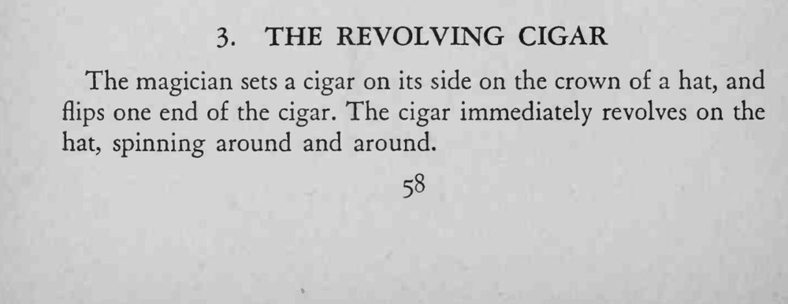
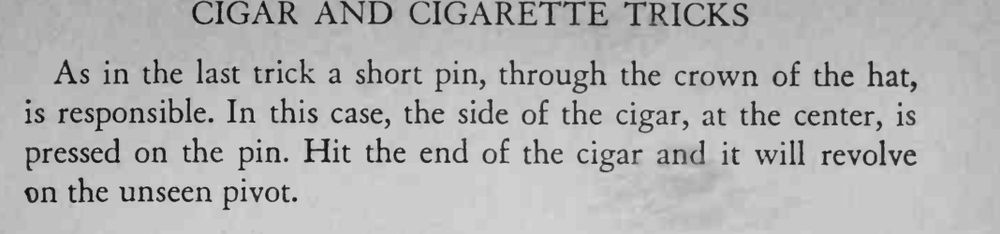

雪茄横放在帽顶上，魔术师拨一下它的一端，雪茄就绕着看不见的轴一圈圈转起来。
针尖要顶在雪茄重心附近，否则雪茄会掉下来。


The magician sets a cigar on its side on the crown of a hat, and flips one end of the cigar. The cigar immediately revolves on the hat, spinning around and around. As in the last trick a short pin, through the crown of the hat, is responsible. In this case, the side of the cigar, at the center, is pressed on the pin. Hit the end of the cigar and it will revolve Dn the unseen pivot.